discografia
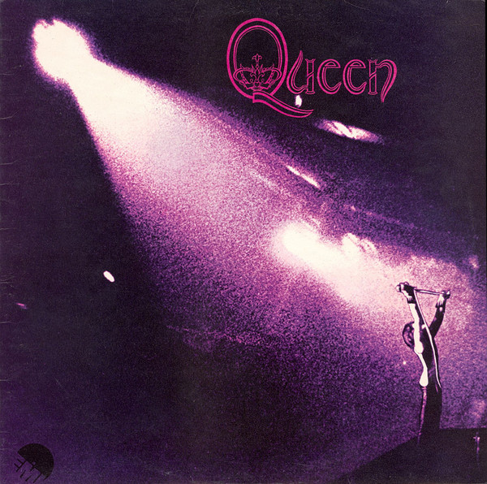
Queen - 1973
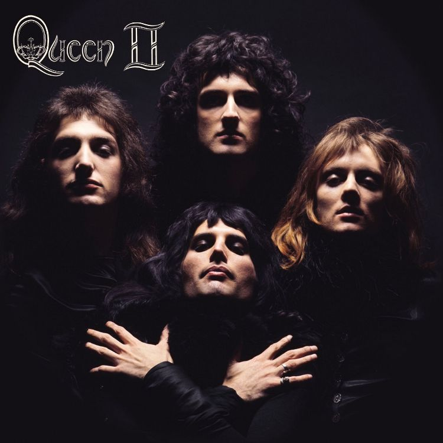
Queen II- 1974
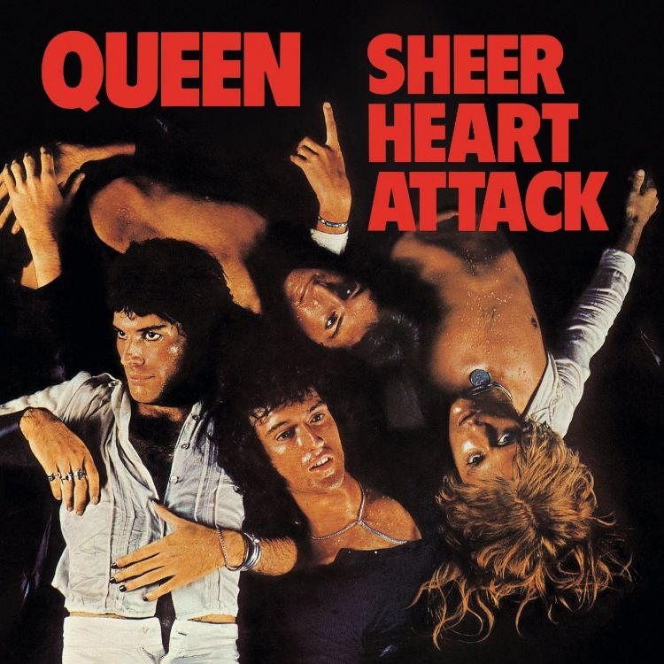
Sheer Heart Attack - 1974
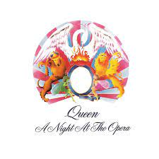
A Night at the Opera - 1975
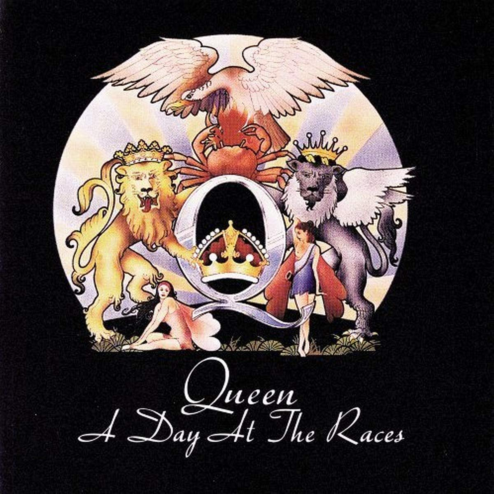
A Day at the Races - 1976
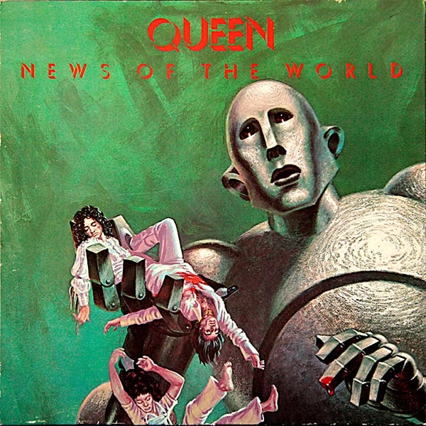
News of the World - 1977
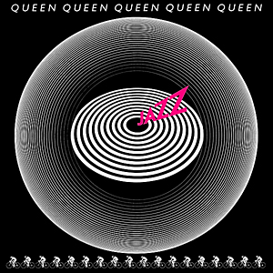
Jazz - 1978
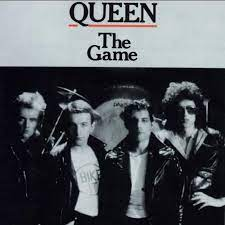
The Game - 1980
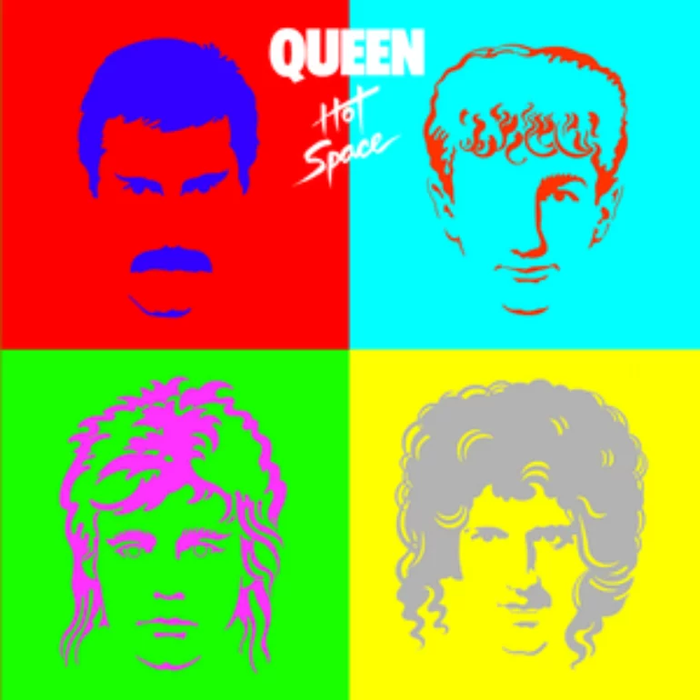
Hot Space - 1982
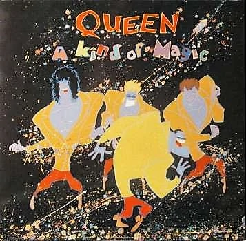
A Kind of Magic - 1986
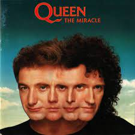
The Miracle - 1989
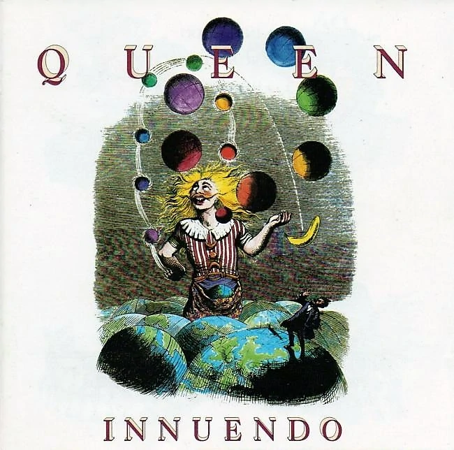
Innuendo - 1991
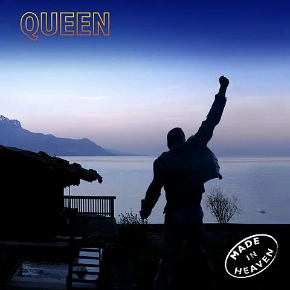
Made in Heaven - 1995